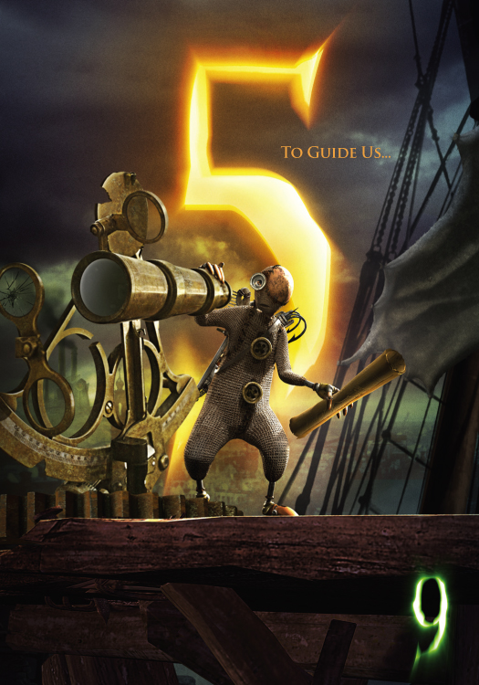
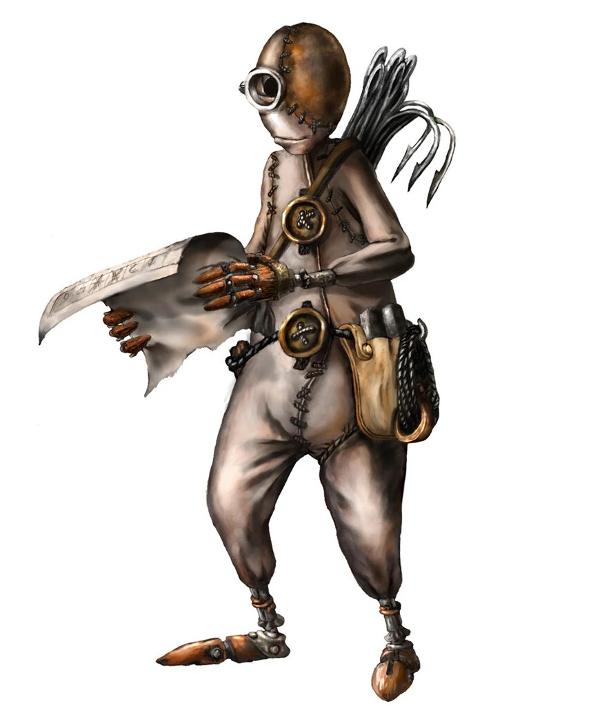
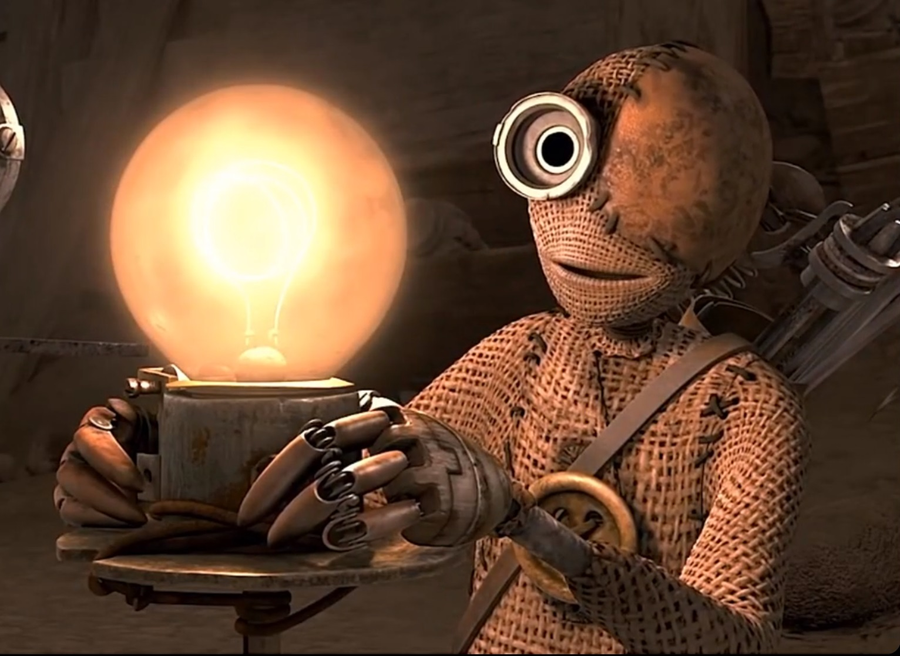

5 is the "common man" who gets along with everyone. Voiced by John C. Reilly, he is a super kind soul and feels the most human out of the stitchpunks (in my opinion).
5 tries to play the peacemaker and keep 1 pleased, but later stands his ground and becomes loyal to 9.
2 was a mentor to 5 as they built things from the scraps left behind to them. 5 lost his left eye while escaping these massive war machines. Poor guy.
5 is armed with a crossbow and has fantastic aim with just about any weapon.
In addition to playing peacemaker and defender, he is also a medic and a navigator. Bless him.

Here is a beautiful sketch of 5 by Shane Acker himself.

5 and 9 build a lightstaff together. He's so happy! Look at him!